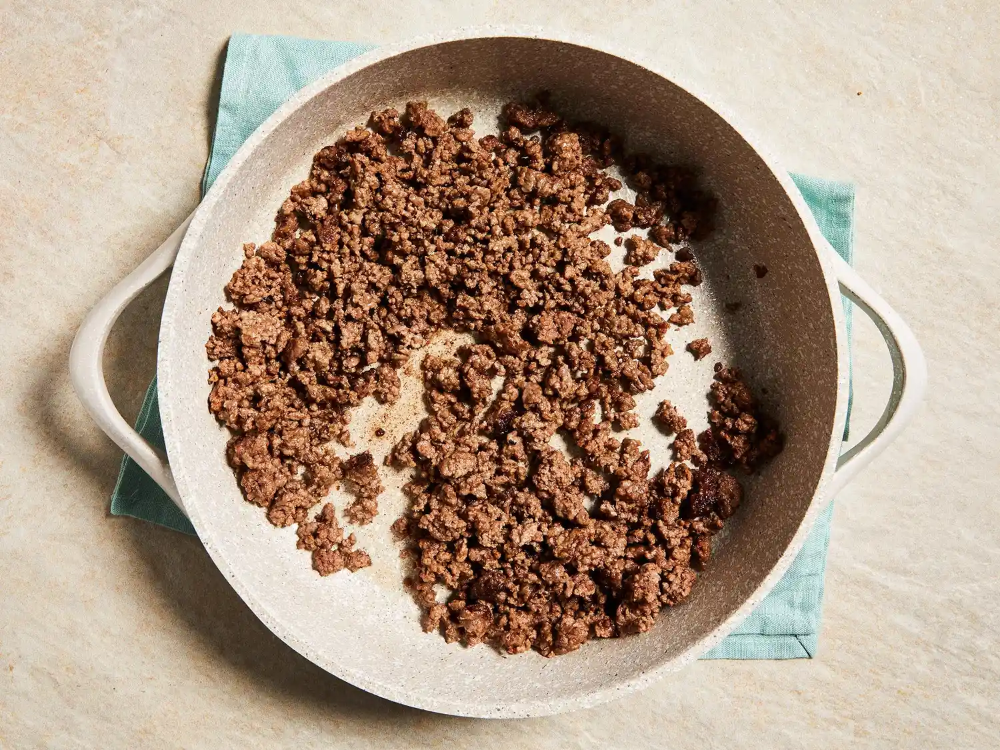
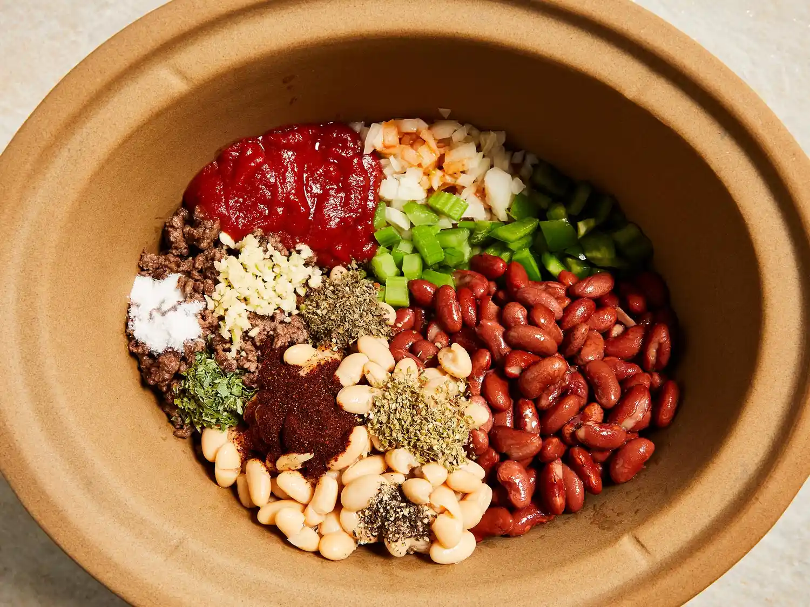
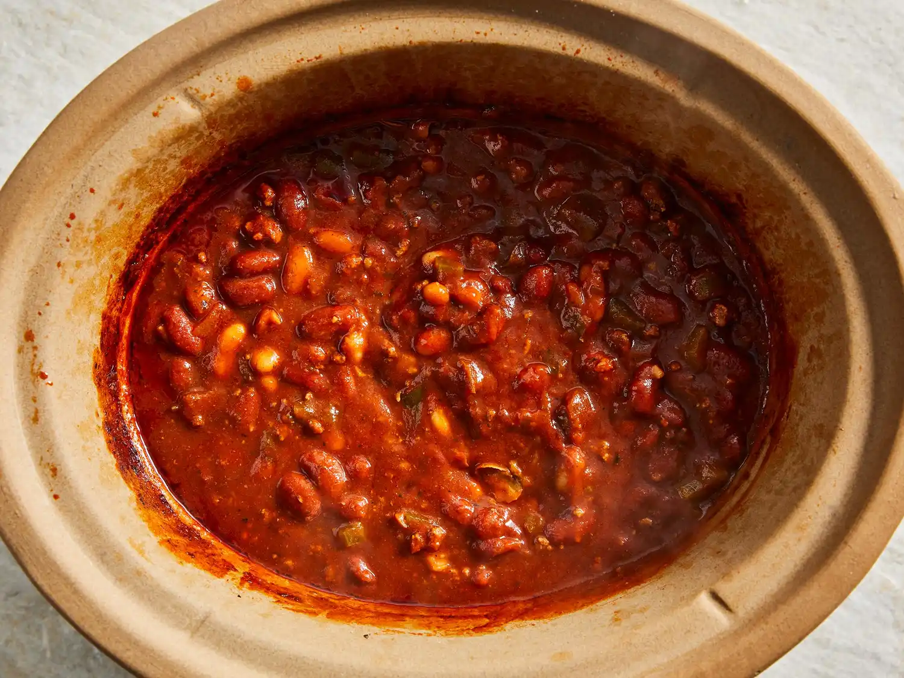
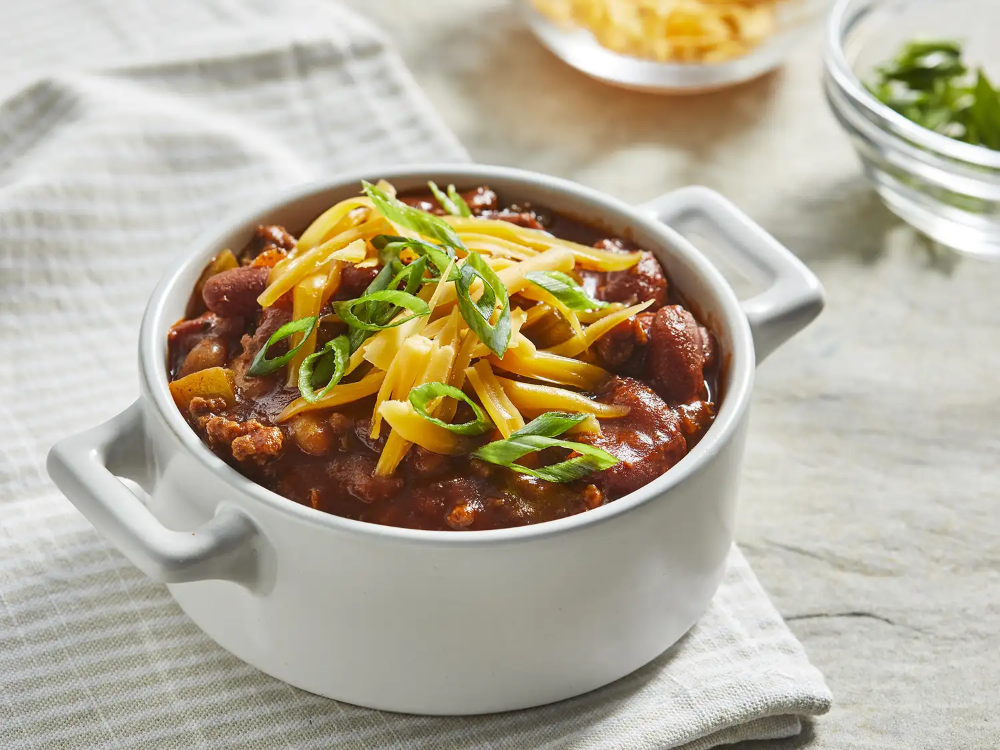

Slow Cooker Chili
This for learning purpose only , odin project
This slow-cooker chili is hearty and filling, with a beefy base, plenty of beans and veggies, and a savory herb-and-spice flavor that fits right into weeknight dinners.
Why You’ll Love This Recipe
- This hearty recipe combines beef, kidney, and cannellini beans for a filling and satisfying dinner.
- Home cooks love how simmering in the slow cooker brings out bold and complex flavors.
- Allrecipes member SmartBowl5288 says, “Easily the best chilli I’ve ever made.”
Ingredient
- 1 pound ground beef
- ¾ cup diced onion
- ¾ cup diced celery
- ¾ cup diced green bell pepper
- cloves garlic, minced>
- 2 (10.75 ounce) cans tomato puree
- 1 (15 ounce) can kidney beans with liquid
- 1 (15 ounce) can kidney beans, drained
- 1 (15 ounce) can cannellini beans with liquid
- ½ tablespoon chili powder
- 1 teaspoon salt
- ¾ teaspoon dried basil
- ¾ teaspoon dried oregano
- ½ teaspoon dried parsley
- ¼ teaspoon ground black pepper
- ⅛ teaspoon hot pepper sauce
Directions
Step 1
Place beef in a skillet over medium heat and cook until evenly brown, 8 to 10 minutes. Drain grease.

Step 2
Transfer beef to a slow cooker and mix in onion, celery, bell pepper, garlic, tomato puree, kidney beans, and cannellini beans. Season with chili powder, salt, basil, oregano, parsley, black pepper, and hot pepper sauce.

Step 3
Cover and cook on Low for 8 hours.

Step 4
Serve hot in bowls with your favorite toppings. Enjoy!

Nutrition Fact
| 273 |
8g |
33g |
19g |
| Callories |
Fat |
Carbs |
protein |